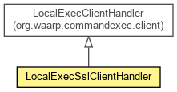

- java.lang.Object
-
- io.netty.channel.ChannelHandlerAdapter
-
- io.netty.channel.ChannelInboundHandlerAdapter
-
- io.netty.channel.SimpleChannelInboundHandler<String>
-
-
-
Nested Class Summary
-
Nested classes/interfaces inherited from interface io.netty.channel.ChannelHandler
io.netty.channel.ChannelHandler.Sharable
-
Method Summary
-
Methods inherited from class io.netty.channel.SimpleChannelInboundHandler
acceptInboundMessage, channelRead
-
Methods inherited from class io.netty.channel.ChannelInboundHandlerAdapter
channelReadComplete, channelUnregistered, channelWritabilityChanged, userEventTriggered
-
Methods inherited from class io.netty.channel.ChannelHandlerAdapter
handlerAdded, handlerRemoved, isSharable
-
Methods inherited from class java.lang.Object
clone, equals, finalize, getClass, hashCode, notify, notifyAll, toString, wait, wait, wait
-
Methods inherited from interface io.netty.channel.ChannelHandler
handlerAdded, handlerRemoved
Copyright © 2009–2016 Waarp. All rights reserved.